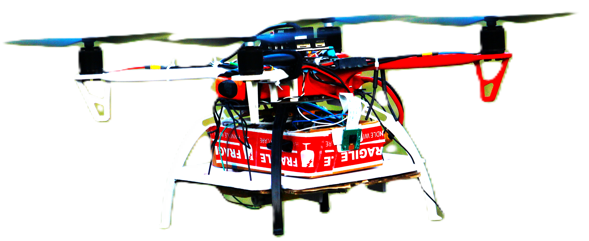
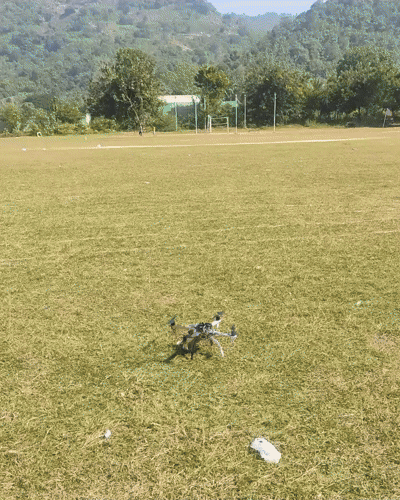
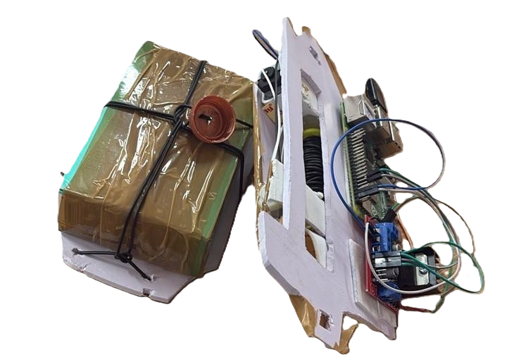
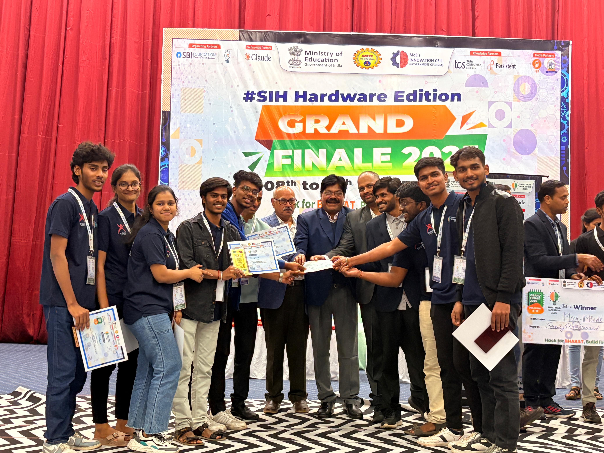
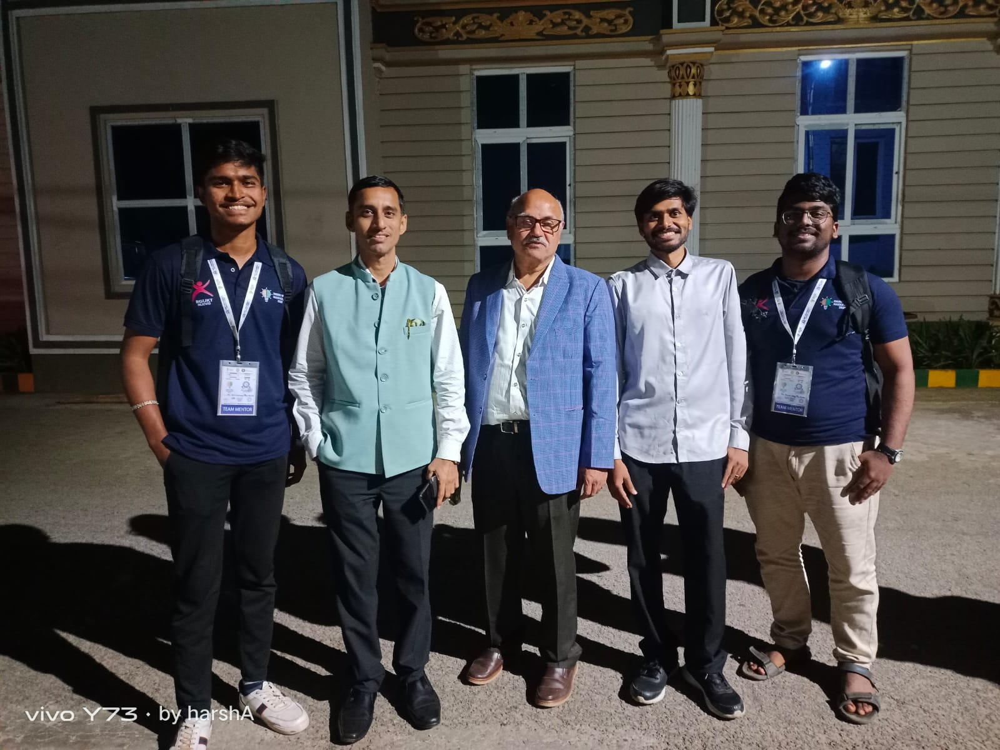
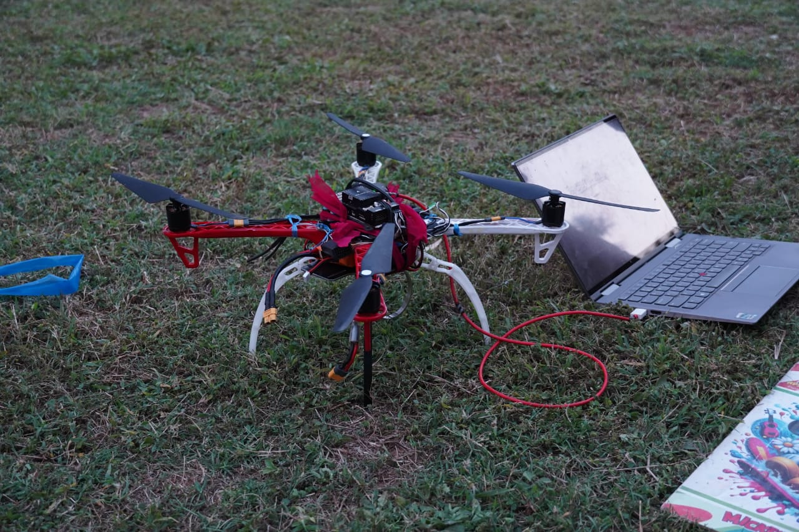
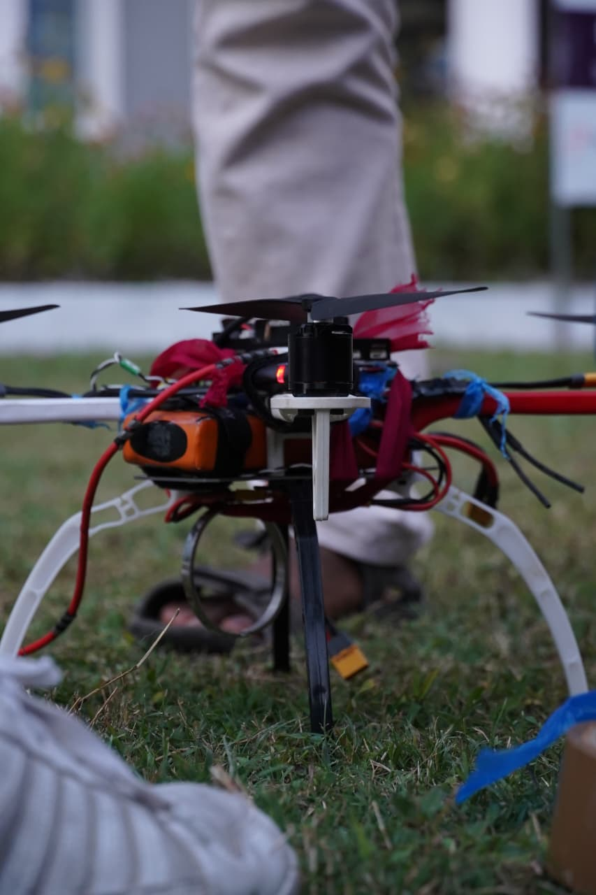

Abstract
DRISTI is a fully autonomous, end-to-end unmanned aerial vehicle system designed for survivor detection and medical supply delivery in disaster-affected areas where ground access is unavailable. Built on the HolyBro X500 V2 quadrotor platform, it uses a Raspberry Pi companion computer running a custom-trained Leaf YOLO nano model for real-time person detection at 3–5 m operational altitude. Navigation is managed by ArduPilot, with onboard AI issuing MAVLink commands to close the loop between perception and flight control. Video is transmitted over a resilient two-tier architecture requiring no internet connectivity. The primary hardware contribution is a motorized cable-lowering delivery mechanism driven by dual DC motors and a pulley system, enabling supply deployment without altitude cycling and significantly improving battery efficiency over conventional servo-drop approaches. The complete system was selected among the Top 5 Finalists at Smart India Hackathon 2025 under Problem Statement 25047, organized by the Government of Odisha, Electronics & IT Department.
Introduction

Natural disasters reliably destroy the infrastructure required to respond to them. Floods inundate roads, earthquakes collapse bridges, and cyclones knock out cellular networks. Within hours of a disaster event, isolated survivors become logistically unreachable by any ground-based system. The gap between a disaster management headquarters and a stranded individual may be short in geographic distance, yet insurmountable on the ground.
Unmanned Aerial Vehicles (UAVs) present the natural solution to this problem. They operate above terrain obstructions, require no road infrastructure, and can navigate directly to GPS coordinates. The core engineering challenge, however, is not merely achieving flight — it is building a system that autonomously identifies survivors, navigates to their location, delivers supplies safely, and completes this entire cycle without internet connectivity or continuous human piloting intervention.
Smart India Hackathon 2025 formalized this challenge as Problem Statement 25047 — "Disaster Response Drone for Remote Areas" — issued by the Government of Odisha, Electronics & IT Department, and held at GEIT Gunupur, Odisha. The problem statement specified an operational payload capacity of 5 kg as the design target. DRISTI (Drone for Rescue, Intelligence, Supply and Terrain Inspection) is the team's response: a complete autonomous system designed, assembled, calibrated, and field-tested from individual hardware components, integrating open-source flight control, edge AI inference, and a novel mechanical delivery mechanism.
Hardware Architecture
The drone was assembled entirely from individual components — no commercially pre-integrated UAV was procured. Every element was selected, assembled, and calibrated by the team. The mechanical platform is the HolyBro X500 V2 development kit, a 500 mm wheelbase quadrotor frame designed for research and development applications. The kit provides a complete propulsion stack: 2216 920KV brushless DC motors, 1045 carbon-fiber propellers, and 20A SimonK-firmware ESCs. The F9 power distribution board consolidates battery input and routes power cleanly to motors, flight controller, and companion computer. The platform is rated for a maximum take-off weight of approximately 2 kg on the standard 4S LiPo configuration, with a hover endurance of roughly 25 minutes unloaded and around 15–18 minutes at modest payload. Stable flight was demonstrated with approximately 1 kg of total onboard payload during the hackathon evaluation, below but progressing toward the 5 kg capacity specified in PS-25047, which would require an upgraded 6S propulsion stack.
Position and navigation are handled by an M8N GPS module with integrated compass, which tracks across GPS, GLONASS, and Galileo constellations and achieves sub-2 m accuracy in open-sky conditions. Flight control runs on ArduPilot, the most widely deployed open-source autopilot firmware in UAV research. ArduPilot manages low-level PID control loops, sensor fusion across IMU, barometer, GPS and compass, motor mixing, and failsafe logic. All calibration and mission planning was performed in Mission Planner, the ArduPilot ground control station. AUTO mode executes pre-programmed GPS waypoint sequences; GUIDED mode accepts real-time position setpoints from the companion computer via MAVLink for dynamic target approach during delivery. A Flysky FS-i6 6-channel 2.4 GHz transmitter paired with an FS-iA6B receiver provides manual override capability and serves as a safety intervention mechanism in the field.
A Raspberry Pi single-board computer is mounted onboard and communicates with the flight controller over the MAVLink serial protocol. This bidirectional link allows the companion computer to read flight telemetry and issue navigation commands, making the drone fully self-contained with no tethered laptop or cloud dependency. The vision system is a 5 megapixel CSI camera module mounted at a deliberate 45° downward-forward angle. This orientation simultaneously covers the ground surface below for survivor detection and the immediate forward airspace for obstacle detection within a single image frame, eliminating the need for a multi-camera setup while keeping system mass low.


On-Device Person Detection
Person detection is performed by Leaf YOLO, a lightweight variant of the YOLO (You Only Look Once) single-shot object detection family. YOLO processes the complete image in a single forward pass and directly regresses bounding box coordinates and class probabilities, making it substantially faster than two-stage detectors while maintaining competitive accuracy at small model sizes. The nano configuration was selected specifically for its minimal parameter count and memory footprint, enabling real-time inference at approximately 15 frames per second on the Raspberry Pi's ARM processor without GPU acceleration — a non-negotiable constraint given that the companion computer must simultaneously sustain video capture, AI inference, MAVLink telemetry, and delivery actuation on a power-limited embedded platform.

Standard person detection benchmarks like COCO and PASCAL VOC are compiled from ground-level photography, typically shot from 1–2 m above the subject. A UAV operating at 3–5 m altitude produces a top-down to oblique perspective that differs considerably: head-to-shoulder aspect ratios are compressed, limbs are foreshortened, and lighting geometry diverges from ground-level norms. A model trained exclusively on such data generalizes poorly under aerial viewpoints.
To address this domain mismatch, a custom aerial dataset was collected at the hackathon venue by flying the drone at operational altitudes while participants moved across the capture area in various poses and orientations. The dataset comprises approximately 1,000 images, each containing between 10 and 12 annotated person instances — a dense annotation setup well-suited for the crowded survivor scenarios the system targets. Initial bounding box annotations were generated using SAM (Segment Anything Model) for rapid segmentation coverage, then manually reviewed and corrected to ensure label quality. The dataset is not publicly available due to intellectual property restrictions imposed by the hackathon organizers. Fine-tuning was performed on a GPU-equipped development laptop, and the trained weights were transferred to the Raspberry Pi for onboard deployment. All inference executes entirely on the Raspberry Pi — detection outputs are consumed internally by the navigation controller and transmitted externally only as bounding box overlays on the video stream to the ground operator.
Video Transmission
Disaster environments are characterized by the degradation or complete absence of communication infrastructure. A system dependent on internet connectivity for its video feed is unreliable in the very conditions it is designed for. DRISTI implements a two-tier transmission architecture that maintains operator situational awareness under both connected and fully disconnected conditions.
Wi-Fi Transmission
When a Wi-Fi access point is reachable — such as a portable router at a mobile command post — the Raspberry Pi streams the live annotated camera feed over standard Wi-Fi to the ground station terminal. The operator receives real-time video with YOLO bounding box overlays and delivery status indicators.
Local RF Network
When Wi-Fi is unavailable, the system falls back to a direct point-to-point RF link between the drone and the ground laptop on a dedicated RF channel. This network is fully internet-independent and requires no external infrastructure. Video is streamed at reduced but operationally sufficient bandwidth, preserving operator awareness in completely disconnected environments.
Crucially, all AI processing and autonomous navigation execute onboard regardless of which transmission tier is active. The mission — detecting survivors and delivering supplies — proceeds without any internet connectivity requirement.
Payload Delivery System
The most common delivery strategy in UAV demonstrations is a servo-actuated drop: the drone descends to near-ground altitude, releases a latch, and the package falls. This approach has real drawbacks in disaster relief. Repeated descent-and-ascent cycles consume significant battery energy, reducing the number of deliveries possible per charge. Flying close to the ground in debris-laden post-disaster environments substantially increases collision risk. And free-releasing fragile medical supplies risks damage on impact.
DRISTI's delivery system avoids all three problems. The drone does not descend during deployment. Instead, it maintains stable hover at operational altitude and lowers the supply package on a controlled cable, operating like an aerial crane. This is achieved through a dual DC motor and pulley assembly mounted to the airframe.
Dual DC Motor Pulley Assembly
Two DC motors drive a common cable spool. Running the motors forward pays out cable at a controlled rate, lowering the attached supply package. Slack detection — monitored via motor current draw — signals that the package has reached the ground. The survivor unties the slip-knot attachment and collects the supplies. The motors then reverse automatically, retracting the cable fully before the drone resumes its mission.

The battery efficiency benefit is significant. In a conventional drone, the energy cost of each delivery cycle is dominated by altitude change — potential energy expenditure scales with vehicle mass and altitude delta. By maintaining a fixed hover altitude, DRISTI eliminates this cost entirely. The payload moves through mechanical motor work on the cable spool, which is far more efficient than lifting the full airframe up and down for every delivery. In multi-survivor scenarios, this translates directly into more successful deliveries per charge.
Implementation Challenges
Building a fully integrated autonomous system under hackathon time constraints surfaced several non-trivial engineering problems across both software and hardware.
The most significant software debugging effort involved a compatibility conflict between Leaf YOLO and the Ultralytics library. Leaf YOLO's model loader uses an attempt_load() function that is incompatible with the standard Ultralytics YOLO model loading path. Attempting to initialize both within the same Python environment caused silent failures and incorrect model initialization. The fix was to isolate the two import paths entirely — Leaf YOLO and Ultralytics were loaded through separate module scopes, preventing namespace collision and ensuring each model initialized against its own correct backend.
A second problem was unexpectedly low CPU utilization on the Raspberry Pi, measured at around 30% despite the volume of concurrent tasks the companion computer was responsible for. The root cause was a serial pipeline architecture where inference, video capture, MAVLink communication, and delivery actuation were being serviced sequentially, each blocking on the previous. Restructuring the entire software stack around a concurrent pipeline — with each subsystem running in its own thread and communicating through shared queues — brought utilization to levels commensurate with the workload and eliminated the latency accumulating at pipeline boundaries.
Related to this was the overhead of coordinating multiple Python processes. Running each subsystem as a separate script introduced significant inter-process communication cost. The solution was a unified Flask server hosting all subsystems — inference, MAVLink telemetry, video streaming, and delivery control — within a single process, with Python threading managing internal concurrency. This reduced the deployment to a single startup command and removed the IPC layer entirely.
On the hardware side, a persistent issue was a camera ribbon cable dequeue timeout: under flight vibration, the CSI ribbon connector would intermittently lose contact and stall the capture pipeline. This was resolved through careful cable routing and mechanically securing the connector against vibration-induced loosening. Beyond the camera, hardware integration involved rounds of ESC and motor calibration, resolving MAVLink wiring conflicts, correcting propeller synchronization, and managing the attitude disturbances introduced by the hanging cable payload during hover — each requiring iterative field testing to characterize and correct.
System Performance and Evaluation
All development and evaluation was conducted under the time and resource constraints of the Smart India Hackathon 2025 finals. The table below summarizes validated performance characteristics as demonstrated at the event.
| System Attribute | Demonstrated Performance |
|---|---|
| Flight platform | HolyBro X500 V2, ArduPilot, Flysky FS-i6 |
| Demonstrated payload mass | 400 g (Raspberry Pi + camera + delivery module) |
| Person detection altitude | 3–5 m with consistent bounding box localization |
| Detection model | Leaf YOLO Nano, custom fine-tuned, deployed on Raspberry Pi |
| Onboard inference speed | ~15 FPS on Raspberry Pi ARM (no GPU) |
| Training dataset | ~1,000 aerial images, 10–12 annotations/image, SAM-assisted + manual verification |
| Network dependency | None; local RF fallback when internet is unavailable |
| Delivery altitude descent | Zero — drone maintains cruise altitude throughout delivery |
| Delivery mechanism | Dual DC motor cable-lowering with automatic retract |
| Obstacle avoidance | Single-camera (45°), bounding-box positional steering |
| Hackathon result | Top 5 Finalists, Smart India Hackathon 2025, PS-25047 |
The motorized cable-lowering delivery mechanism was specifically noted by evaluators as a technically differentiated solution. Teams addressing the same problem statement uniformly adopted servo-based drop mechanisms; DRISTI's zero-descent delivery profile and the battery-efficiency argument were primary factors in the jury's assessment of technical differentiation.
Conclusion and Future Work
DRISTI demonstrates that a fully autonomous, internet-independent UAV system for disaster relief can be built from commodity open-source components. The integration of ArduPilot navigation, edge-deployed YOLO person detection, a resilient dual-tier communication architecture, and a mechanically efficient cable-lowering delivery system into a coherent end-to-end pipeline represents a meaningful step toward operationally deployable disaster response UAVs.
The principal technical contributions are: a custom aerial person detection model trained on domain-matched data and deployed entirely on an edge device; a two-tier video transmission architecture resilient to complete network infrastructure failure; a motorized cable-lowering payload delivery system that eliminates altitude cycling and reduces low-altitude collision risk; and a sensor-minimal obstacle avoidance strategy using a single 45° camera.
On the hardware side, the most immediate extension is upgrading the propulsion system to higher-KV motors with a 6S battery to approach the 5 kg payload target specified in PS-25047. For perception, replacing the reactive 2D bounding-box avoidance with a monocular depth estimation model like MiDaS would enable predictive 3D path planning, allowing the drone to avoid obstacles well before close-range proximity. At a system level, coordinating a swarm of DRISTI units with shared detection state and non-overlapping search zones would scale coverage linearly with fleet size — ArduPilot's swarm extension provides the baseline infrastructure for this. Finally, PS-25047 explicitly requires a mobile application for disaster management teams; a real-time map view with live detection locations, drone position, and delivery status would complete the operator-facing interface for field deployment.
Resources
Event Gallery







References
- ArduPilot Development Team. ArduPilot Autopilot Suite. Open-source UAV flight stack. ardupilot.org
- HolyBro. X500 V2 Development Kit: User Guide and Hardware Reference. holybro.com
- Redmon, J., Divvala, S., Girshick, R., & Farhadi, A. You Only Look Once: Unified, Real-Time Object Detection. CVPR 2016.
- Wang, C.-Y., Bochkovskiy, A., & Liao, H.-Y. M. YOLOv7: Trainable Bag-of-Freebies Sets New State-of-the-Art for Real-Time Object Detectors. CVPR 2023.
- MAVLink Protocol Development Team. MAVLink Micro Air Vehicle Message Marshalling Library. mavlink.io
- Raspberry Pi Foundation. Raspberry Pi Hardware Documentation. raspberrypi.com
- Smart India Hackathon 2025. Problem Statement 25047 — Disaster Response Drone for Remote Areas. Government of Odisha, Electronics & IT Department. Ministry of Education, Government of India.
Contact
Nikhileswara Rao Sulake · nikhil01446@gmail.com · LinkedIn · GitHub